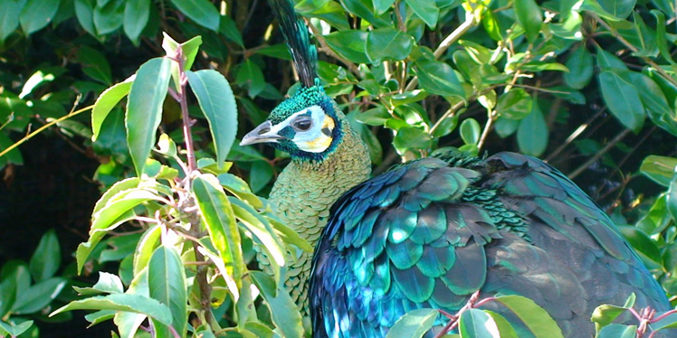

GreenPeafowl
AKA:Dragonbird, Java peafowl. Scientific Name: Pavo muticus Family: Phasianidae Species: P. muticus Speed: 16 km/h Length: Male: 180 – 300 cm Female: 100 – 110 cm Mass: Male: 3.8 – 5 kg Female: 1 – 1.2 kg Wing Span: 120cm – 300cm Life Span: 12 – 20 years Location: Southeast Asia Diet: Grains such as barley, ri
Appearance:
Heavy-winged, long-legged and long-tailed. Wings of the male are black with a sheen of blue and has a green and gold plumage. Green Peahen has shorter upper tail feather coverts.
Facts:
- The beauty of this bird has turned it into imperial pets and placed in the world’s royal palaces for centuries.
- Eggs and chicks are collected for the pet trade.
- In spite of their big sizes, they actually can fly.
- They are one of the largest flying bird.